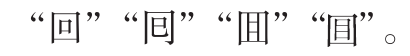

教材文本 · 小说阅读
孔乙己
小说刻画孔乙己迂腐、自尊而穷困的复杂形象，通过酒店众人的笑与他的受辱、伤残、消失，揭示科举文化与冷漠社会对人的损害。
导读
文体与题材：短篇小说；以酒店伙计的回忆叙述落魄读书人的遭遇。
作者简介：鲁迅（1881—1936），浙江绍兴人，文学家、思想家，著有小说集《呐喊》《彷徨》等。
文本出处：鲁迅：《孔乙己》，选自《呐喊》，《鲁迅全集》第一卷，人民文学出版社2005年版。
内容脉络：酒店的等级格局先确定人物处境，随后回忆孔乙己受嘲笑和对待孩子的场景，再转入被打折腿后的最后露面，最终在欠账的重复声中写他的消失。
内容主旨：小说刻画孔乙己迂腐、自尊而穷困的复杂形象，通过酒店众人的笑与他的受辱、伤残、消失，揭示科举文化与冷漠社会对人的损害。
阅读重点：区分孔乙己的缺点与所受伤害，分析叙述者、笑声和结尾的认识范围。
原文与随文研读
原文按结构分节；随文内容可定位至对应段落。
环境与视角：酒店的等级格局和小伙计的处境引出孔乙己。
鲁镇的酒店的格局，是和别处不同的：都是当街一个曲尺形的大柜台，柜里面预备着热水，可以随时温酒。做工的人，傍午傍晚散了工，每每花四文铜钱，买一碗酒，——这是二十多年前的事，现在每碗要涨到十文，——靠柜外站着，热热的喝了休息；倘肯多花一文，便可以买一碟盐煮笋，或者茴香豆，做下酒物了，如果出到十几文，那就能买一样荤菜，但这些顾客，多是短衣帮，大抵没有这样阔绰。只有穿长衫的，才踱进店面隔壁的房子里，要酒要菜，慢慢地坐喝。
我从十二岁起，便在镇口的咸亨酒店里当伙计，掌柜说，样子太傻，怕侍候不了长衫主顾，就在外面做点事罢。外面的短衣主顾，虽然容易说话，但唠唠叨叨缠夹不清的也很不少。他们往往要亲眼看着黄酒从坛子里舀出，看过壶子底里有水没有，又亲看将壶子放在热水里，然后放心：在这严重监督之下，羼水也很为难。所以过了几天，掌柜又说我干不了这事。幸亏荐头的情面大，辞退不得，便改为专管温酒的一种无聊职务了。
我从此便整天的站在柜台里，专管我的职务。虽然没有什么失职，但总觉有些单调，有些无聊。掌柜是一副凶脸孔，主顾也没有好声气，教人活泼不得；只有孔乙己到店，才可以笑几声，所以至今还记得。
展开：孔乙己的衣着、言谈及与众人的交往显出复杂性格。
孔乙己是站着喝酒而穿长衫的唯一的人。他身材很高大；青白脸色，皱纹间时常夹些伤痕；一部乱蓬蓬的花白的胡子。穿的虽然是长衫，可是又脏又破，似乎十多年没有补，也没有洗。他对人说话，总是满口之乎者也，教人半懂不懂的。因为他姓孔，别人便从描红纸上的“上大人孔乙己”这半懂不懂的话里，替他取下一个绰号，叫作孔乙己。孔乙己一到店，所有喝酒的人便都看着他笑，有的叫道：“孔乙己，你脸上又添上新伤疤了!”他不回答，对柜里说：“温两碗酒，要一碟茴香豆。”便排出九文大钱。他们又故意的高声嚷道：“你一定又偷了人家的东西了!”孔乙己睁大眼睛说：“你怎么这样凭空污人清白……”“什么清白？我前天亲眼见你偷了何家的书，吊着打。”孔乙己便涨红了脸，额上的青筋条条绽出，争辩道：“窃书不能算偷……窃书!……读书人的事，能算偷么？”接连便是难懂的话，什么“君子固穷”，什么“者乎”之类，引得众人都哄笑起来：店内外充满了快活的空气。
听人家背地里谈论，孔乙己原来也读过书，但终于没有进学，又不会营生；于是愈过愈穷，弄到将要讨饭了。幸而写得一笔好字，便替人家钞钞书，换一碗饭吃。可惜他又有一样坏脾气，便是好喝懒做。坐不到几天，便连人和书籍纸张笔砚，一齐失踪。如是几次，叫他钞书的人也没有了。孔乙己没有法，便免不了偶然做些偷窃的事。但他在我们店里，品行却比别人都好，就是从不拖欠；虽然间或没有现钱，暂时记在粉板上，但不出一月，定然还清，从粉板上拭去了孔乙己的名字。
孔乙己喝过半碗酒，涨红的脸色渐渐复了原，旁人便又问道：“孔乙己，你当真认识字么？”孔乙己看着问他的人，显出不屑置辩的神气。他们便接着说道：“你怎的连半个秀才也捞不到呢？”孔乙己立刻显出颓唐不安模样，脸上笼上了一层灰色，嘴里说些话；这回可是全是之乎者也之类，一些不懂了。在这时候，众人也都哄笑起来：店内外充满了快活的空气。
在这些时候，我可以附和着笑，掌柜是决不责备的。而且掌柜见了孔乙己，也每每这样问他，引人发笑。孔乙己自己知道不能和他们谈天，便只好向孩子说话。有一回对我说道：“你读过书么？”我略略点一点头。他说：“读过书，……我便考你一考。茴香豆的茴字，怎样写的？”我想，讨饭一样的人，也配考我么？便回过脸去，不再理会。孔乙己等了许久，很恳切的说道：“不能写罢？……我教给你，记着!这些字应该记着。将来做掌柜的时候，写账要用。”我暗想我和掌柜的等级还很远呢，而且我们掌柜也从不将茴香豆上账；又好笑，又不耐烦，懒懒的答他道：“谁要你教，不是草头底下一个来回的回字么？”孔乙己显出极高兴的样子，将两个指头的长指甲敲着柜台，点头说：“对呀对呀!……回字有四样写法，你知道么？”我愈不耐烦了，努着嘴走远。孔乙己刚用指甲蘸了酒，想在柜上写字，见我毫不热心，便又叹一口气，显出极惋惜的样子。

有几回，邻居孩子听得笑声，也赶热闹，围住了孔乙己。他便给他们茴香豆吃，一人一颗。孩子吃完豆，仍然不散，眼睛都望着碟子。孔乙己着了慌，伸开五指将碟子罩住，弯腰下去说道：“不多了，我已经不多了。”直起身又看一看豆，自己摇头说：“不多不多！多乎哉？不多也。”于是这一群孩子都在笑声里走散了。
孔乙己是这样的使人快活，可是没有他，别人也便这么过。
注释 · 批注 · 札记 10
身份的矛盾
站着喝酒而穿长衫的唯一的人站着喝酒与贫穷相联系，长衫却标示读书人的身份追求。两种特征并置，集中显出人物处境。
上大人孔乙己
上大人孔乙己上大人孔乙己。旧时通行的一种描红纸，印有“上大人孔乙己”这样一些笔画简单、三字一句、似通非通的文字。
君子固穷
君子固穷君子固穷。语出《论语·卫灵公》。意思是君子能够不因穷困而改变操守。固，安守。
钞
钞钞。现在写作“抄”。
间（jiàn）或
间或间（jiàn）或。偶然，有时候。
粉板
粉板粉板。旧时店铺里用于记事的一种一尺见方的白漆（也有用黄漆的）木板。
伙计的眼光
我想，讨饭一样的人，也配考我么伙计年纪虽小，已接受以贫富衡量人的等级观念。叙述视角让冷漠通过日常反应显现。
回字有四样写法
回字有四样写法“回”的四种字形见本段所附教材原注字形图。第四种在一般书写中极少使用。
多乎哉？不多也
多乎哉？不多也多乎哉？不多也。语出《论语·子罕》。这里的意思是：多吗？不多了!
转折与结局：孔乙己被打残后最后露面，随后从众人生活中消失。
有一天，大约是中秋前的两三天，掌柜正在慢慢的结账，取下粉板，忽然说：“孔乙己长久没有来了。还欠十九个钱呢!”我才也觉得他的确长久没有来了。一个喝酒的人说道：“他怎么会来？……他打折了腿了。”掌柜说：“哦!”“他总仍旧是偷。这一回，是自己发昏，竟偷到丁举人家里去了。他家的东西，偷得的么？”“后来怎么样？”“怎么样？先写服辩，后来是打，打了大半夜，再打折了腿。”“后来呢？”“后来打折了腿了。”“打折了怎样呢？”“怎样？……谁晓得？许是死了。”掌柜也不再问，仍然慢慢的算他的账。
中秋过后，秋风是一天凉比一天，看看将近初冬；我整天的靠着火，也须穿上棉袄了。一天的下半天，没有一个顾客，我正合了眼坐着。忽然间听得一个声音：“温一碗酒。”这声音虽然极低，却很耳熟。看时又全没有人。站起来向外一望，那孔乙己便在柜台下对了门槛坐着。他脸上黑而且瘦，已经不成样子；穿一件破夹袄，盘着两腿，下面垫一个蒲包，用草绳在肩上挂住；见了我，又说道：“温一碗酒。”掌柜也伸出头去，一面说：“孔乙己么？你还欠十九个钱呢!”孔乙己很颓唐的仰面答道：“这……下回还清罢。这一回是现钱，酒要好。”掌柜仍然同平常一样，笑着对他说：“孔乙己，你又偷了东西了!”但他这回却不十分分辩，单说了一句“不要取笑!”“取笑？要是不偷，怎么会打断腿？”孔乙己低声说道：“跌断，跌，跌……”他的眼色，很像恳求掌柜，不要再提。此时已经聚集了几个人，便和掌柜都笑了。我温了酒，端出去，放在门槛上。他从破衣袋里摸出四文大钱，放在我手里，见他满手是泥，原来他便用这手走来的。不一会，他喝完酒，便又在旁人的说笑声中，坐着用这手慢慢走去了。
注释 · 札记 · 评议 6
服辩
服辩服辩。即认罪书。这里指不经官府而自行了案认罪的书状。
年关
年关年关。旧指阴历年底。旧时商业往来，年底必须结清欠账，欠债的人过年之难如同过关，所以叫“年关”。
推测与判断
大约孔乙己的确死了“大约”表明叙述者没有获得死讯，“的确”则承接伤残、贫困和长久失踪等处境，形成对结局的沉重判断。
“到现在终于没有见”是叙述者直接掌握的事实，死则由此与既有困境推断。“大约”并未取消悲剧判断，“的确”也未把推断变成亲见，这种不确定本身揭示无人追问的社会冷漠。
一九一九年三月
一九一九年三月一九一九年三月。据鲁迅1919年3月26日所作的《附记》，本文作于1918年冬天。
记忆由谁触发
我才也觉得他的确长久没有来了掌柜先提欠钱，小伙计才意识到孔乙己缺席，说明他的存在平时不被主动想起。可与“只有……才可以笑几声”比较，观察被记得的两种条件：供人取乐与留下债务，都不是对人的关怀。
不同层面的两个模态
大约孔乙己的确死了大约回应没有死讯的认识限度，的确承接伤残、穷困与跨年失踪的处境判断。二者使未被证实的死讯与极可能的结局同在；不能以词面相反就删改原句，需区分判断依据。
研读题
结合原文及篇章关系回答，说明判断所依据的语句。
第1题 · 人物形象
研读题：孔乙己的形象具有哪些彼此关联的特点？
参考答案1展开 / 收起
参考作答
- 身份焦虑与迂腐：他贫困而仍坚持长衫、之乎者也，依恋读书人的身份，又以“窃书不能算偷”为自己辩护。
- 善意与脆弱：他愿教伙计识字、分豆给孩子，保有善意；受伤后恳求别人别取笑，显出受辱者的脆弱。
审题与考查点
孔乙己的形象具有哪些彼此关联的特点？
文本分析
身份焦虑与迂腐查看证据 ↗
文本依据：“站着喝酒而穿长衫的唯一的人”；“窃书不能算偷”。
衣着、语言和辩白共同呈现科举文化对其身份意识的影响；社会嘲弄使这种自尊不断受伤。
善意与脆弱查看证据 ↗
文本依据：“我教给你，记着!”；“他便给他们茴香豆吃，一人一颗”；“他的眼色，很像恳求掌柜，不要再提”。
前后场景把人物的友善和遭遇相互映照，使读者理解其喜剧外表中的悲剧性。
知识点
解题方法
把外貌、语言、行为分组，再比较不同交往场景中人物的稳定特征。
易误辨析
人物的缺点与他遭受的暴力、冷漠分属不同评价层面。
答案组织与检核
每点写明特征及证据，保留人物的复杂性。
第2题 · 笑声与悲剧
研读题：小说反复写众人的笑，有怎样的叙事作用？
参考答案2展开 / 收起
参考作答
- 形成群体关系：众人把伤疤、偷书、未中秀才和伤残当笑料，显示孔乙己被排斥和消费的处境。
- 加深悲剧反差：孔乙己的身体和生活逐渐败落，周围人的态度却延续如常，悲惨遭遇与快活气氛形成反差。
审题与考查点
小说反复写众人的笑，有怎样的叙事作用？
文本分析
形成群体关系查看证据 ↗
文本依据：“店内外充满了快活的空气”；“你怎的连半个秀才也捞不到呢”；“此时已经聚集了几个人，便和掌柜都笑了”。
笑声接连出现，使一次次羞辱具有日常性；伙计的附和又扩大了冷漠的范围。
加深悲剧反差查看证据 ↗
文本依据：“可是没有他，别人也便这么过”；“到第二年的端午，又说：“孔乙己还欠十九个钱呢!””。
“没有他，别人也便这么过”与结尾欠款的反复，写出他的生命不被重视。
知识点
解题方法
依时间梳理各次笑的原因，比较人物遭遇的变化与旁观者态度的延续。
易误辨析
孩子受赠后的笑与成年人的恶意嘲笑，需按具体交往关系区分。
答案组织与检核
先说明群体关系，再说明悲喜对照产生的整体效果。
篇目与册次
研习拓展
研习题1 · 粉板与人物缺席
粉板上先前名字会被拭去，后来十九钱反复留下，怎样使孔乙己的命运可感？
讨论参考1展开 / 收起
参考作答
- 原有往返与信用：孔乙己虽偶有赊账，却不出一月就还清、名字随账消去，说明他尚能维持喝酒与还债的日常往返；粉板抹名在此前代表信用关系完成。
- 债存人亡的预感：后来欠款跨过端午仍重复，人却再未出现，固定十九钱反衬人物与店铺的关系中断；掌柜只提债数，使生命缺席与冷淡的记忆方式一同显出。
审题与考查点
比较账目状态、时间流逝和人的在场。
文本分析
原有往返与信用查看证据 ↗
间或与不出一月分别给赊欠和偿还时间，定然又使循环稳定。名字被抹在此前是还清的标志，须先确定这一旧义。偿还与抹名相接，使消失成为信用完成的符号。
债存人亡的预感查看证据 ↗
第二年与又延长债务时间，年关仍未见再扩大缺席；数字恒定而人不归，改变粉板消名的原有循环，不能只把欠账当一般细节。债数不变时，缺席的人却越来越难再归。
知识点
反复是有意重复词语或句子以组织意义、节奏和情感的修辞方式。语篇复现还包括同一对象、事件或信息在不同位置的再次出现。
解题方法
把各次粉板记述按时间排列，比较数字和人物在场是否同变。
易误辨析
十九钱能显示记忆方式，但小说未交代确切每笔消费，不必编算消费次数。
答案组织与检核
答案须比较两个阶段，不把账清时与人缺席后的拭名混为一事。
参考文献
- 鲁迅：《孔乙己》，选自《呐喊》，《鲁迅全集》第一卷，人民文学出版社2005年版。
- 选自《呐喊》（《鲁迅全集》第一卷，人民文学出版社2005年版）。
- 教育部组织编写：《义务教育教科书·语文九年级下册》，人民教育出版社，统编版（2024年修订前版），第18页。
信用记录中的存在
从粉板上拭去了孔乙己的名字先前孔乙己定期还钱，名字会从粉板消失，消失表示账清。末尾钱债长存、人却不见，同一记账物的关系倒转：账上还有人名，社会关心的却只剩欠款，生命处境被数字取代。
反复与复现。